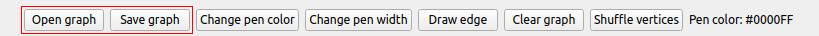

Welcome to Isomorph - a graph drawing tool, which allows you to create colored graphs!
The application consists of two seperate canvas that allow the user to create graphs and test whether these are isomorphic.
To place a vertex, click on the canvas with right mouse button. By default, the vertex will be colored black.
If you want to color a vertex, double click it and it will use your current pen color. (By default, the pen is set to blue)
To place an edge, left click the start vertex, drag the mouse to the end vertex and release the button.
The edge's color will also depend on your current pen color!
Paint supports many operations on your graph. Each canvas comes with many functions that will help you create your graphs.
To change pen color, press the Change pen color button.
By doing so, a system dialog will open that will allow you to pick a new color. It contains recently used color a few most commonly used colors, just for your graph!
For graphs with many colors, we advise to use the '+' button located at the button of the dialog box. It will open an advance dialog box that will allow the user to open the advance color picker, where user can directly specify the RGB value.
We also return the current pen RGB value for user's convenience
Moreover, we provide the user with an ability to change pen width by pressing the Change pen width button.
This does not affect the isomorphism testing of the graph! It is only an aesthetic feature. By pressing the button, the user will see a combo box that allows them to specify the width of the pen (1-10 pixels).
For bigger graphs, we recommend using the Draw Edge button, as it allows the user to connect the graph more precisely.
Pressing the button will open a new dialog box that will allow the user to specify start and end vertex of the new edge. If the user decides to create an edge between the same vertex, it will color the vertex instead.
After specifing the vertices, the user will see the same dialog box to pick the edge color as when they change the pen color
User can also save and open existing graphs.
To save a graph, the user needs to press the Save button. It will open the system standard dialog for saving files. Saving will produce three files that are crucial for the system to run properly!
To open a graph, the user needs to press the Open button. It will open the system standard dialog for opening files. The user should select the PNG file to properly load the graph!
Clear allows the user to clear their canvas by erasing all edges and vertices
Shuffle allows the user to shuffle the vertices around! It leaves all the edges intact, but it changes the labelling of all the vertices randomly.
The user can check whether the two graphs that they drew are isomorphic. However, to do so, they first need to specify a runnable file that will perform the testing! They need to specify the runnable file that then will perform the check in the background. After the test, the user will be notified of the outcome and will be able to unify both graphs if they would like to do so.